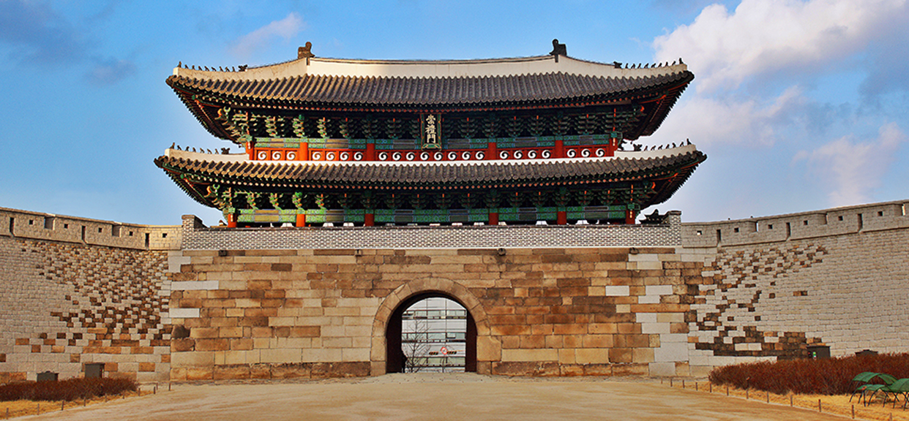
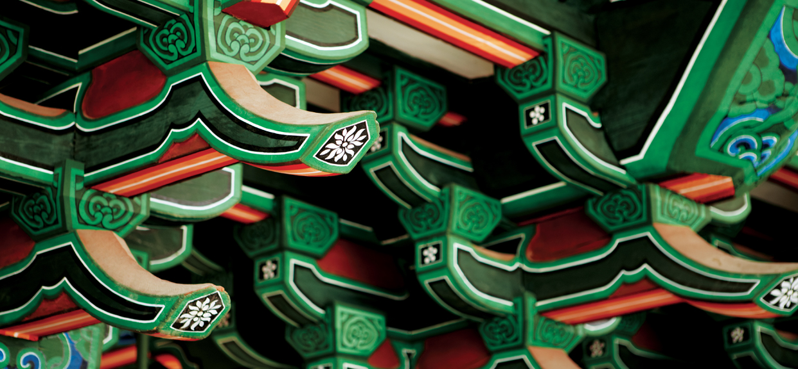
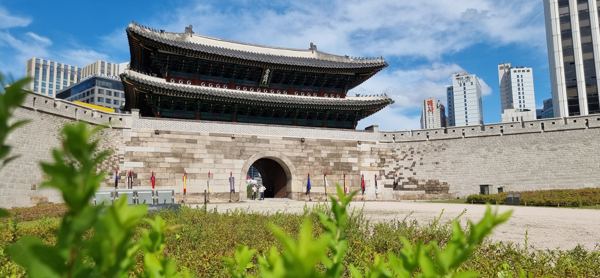

숭례문 사진 더 보기 ▶
공지사항
4년 만에 다시 돌아온 ‘숭례문 역사 이야기’무료 해설
화요일 부터 일요일: 09:00 ~ 18:00 / 매주 월요일 휴무
주소: 서울특별시 중구 세종대로 40
전화: 02-779-8547
등록일: 2022. 10. 20
안녕하세요.
10월 22일~11월 19일까지 매주 토요일마다
하루 두차례씩 숭례문에서
숭례문의 건축적인 아름다움과 의미를 해설사
설명을 들으며 관람할 수 있는 숭례문 무료 해설
프로그램을 진행합니다.
회당 35분 정도 소요되도록 구성했으며,
사전 예약 없이 현장에서 바로 참여할 수 있습니다.
감사합니다.
◈운영시간: 14:00~14:35, 15:00~15:35 /
회당 약
35분 소요
◈참여방법: 현장참여, 무료, 예약없음.
◈집합장소: 숭례문 정문 종합 안내판


4년 만에 다시 돌아온 ‘숭례문 역사 이야기’무료 해설
화요일 부터 일요일: 09:00 ~ 18:00 / 매주 월요일 휴무
주소: 서울특별시 중구 세종대로 40
전화: 02-779-8547